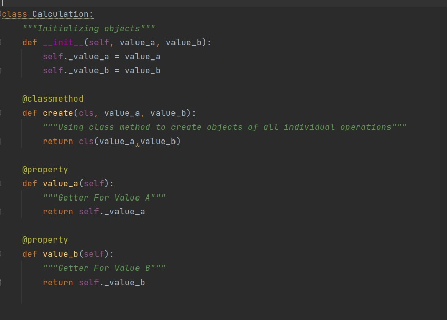
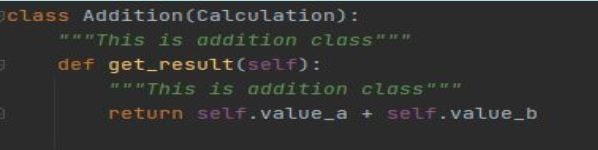
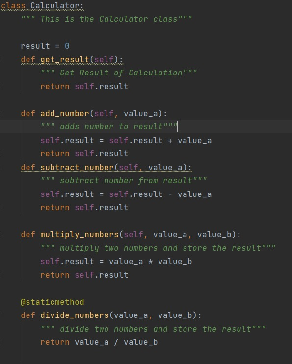

- ABSTRACTION:
It refers to, providing only essential information to the outside world and hiding their background details. For example, a web server hides how it processes data it receives, the end user just hits the endpoints and gets the data back.
EXAMPLE:

In the calculator program the results of the variables of classes addition, subtraction, multiplication , division are derived from the variables used in class calculation

- ENCAPSULATION:
Encapsulation is a process of binding data members (variables, properties) and member functions (methods) into a single unit. It is also a way of restricting access to certain properties or component. The best example for encapsulation is a class.
EXAMPLE:

- INHERITANCE:
The ability to create a new class from an existing class is called Inheritance. Using inheritance, we can create a Child class from a Parent class such that it inherits the properties and methods of the parent class and can have its own additional properties and methods. For example, if we have a class Vehicle that has properties like Color, Price, etc, we can create 2 classes like Bike and Car from it that have those 2 properties and additional properties that are specialized for them like a car has numberOfWindows while a bike cannot. Same is applicable to methods.
EXAMPLE:

- POLYMORPHISM:
The word polymorphism means having many forms. Typically, polymorphism occurs when there is a hierarchy of classes and they are related by inheritance. C++ polymorphism means that a call to a member function will cause a different function to be executed depending on the type of object that invokes the function.
EXAMPLE: